Factory Team Directory & Station Credentials
Every employee has an assigned Employee Code, personalized login credentials, and operational responsibilities.
| Code | Employee Name | Official Role & Station Title | Login Email | Default Password | Primary Responsibilities |
|---|---|---|---|---|---|
| TT001 | Neeraj Shingavi | Founder / Operations Lead | neeraj@tailoringturba.com |
turba@neeraj123 |
Overall production health, bottlenecks, customer escalations, revenue tracking, order intake approvals. |
| TT002 | Sanjay Shingavi | Co-Founder / Master Cutter & Fabric | sanjay@tailoringturba.com |
turba@sanjay123 |
Fabric inventory rolls, GSM verification, pattern plotting, cutting accuracy, fabric waste minimization. |
| TT003 | Pratik Jadhav | Sales, Marketing & Software Developer | pratik@tailoringturba.com |
turba@pratik123 |
Order intake verification, customizer mockup rendering, website sync, system stability, jobwork coordination. |
| TT004 | Mahesh Ghavale | Branding & Printing Specialist | mahesh@tailoringturba.com |
worker@mahesh123 |
DTF printing, screen printing setups, embroidery alignment, print file inspection, cure & heat press times. |
| TT005 | Ajay | Quality Check & Dispatch Specialist | ajay@tailoringturba.com |
worker@ajay123 |
End-of-line measurement inspection, loose thread trimming, defect tagging & rework returns, packing, courier handover. |
Operator Login & Station Access (`/ops/login`)
How to access the Ops Station from factory tablets, floor touchscreens, and laptop browsers.
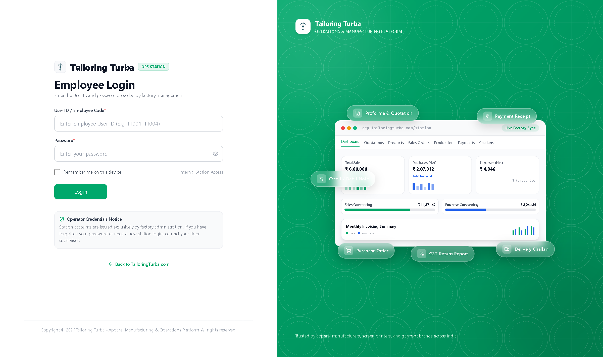
http://localhost:3000/ops (or https://ops.tailoringturba.com on live domain). The system will automatically direct you to /ops/login.Operations Command Center & Real-Time Dashboard (`/ops`)
The primary overview screen displaying stage counts, urgent bottleneck alerts, and monthly output velocity.
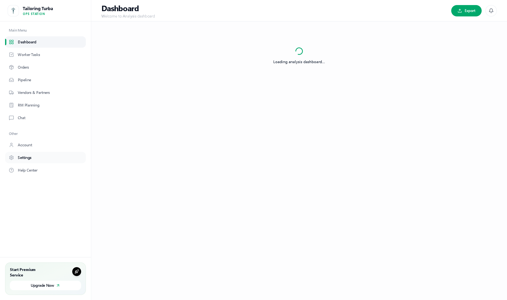
Live Pipeline Counters
Clicking on any stage pill (e.g., "Cutting: 4", "Branding: 2") instantly filters the orders directory to only display garments currently at that exact factory stage.
Urgent / Rush Order Banner
Highlighting orders with delivery deadlines approaching within 48 hours or marked with RUSH priority by management.
Worker Performance & Velocity
Real-time statistics displaying garments cut, stitched, printed, and dispatched across the month, tracking factory throughput.
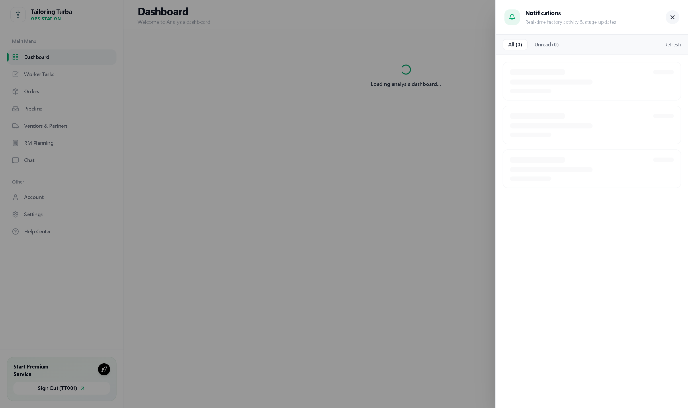
Orders Directory: Dual-View List & Kanban Board (`/ops/orders`)
Comprehensive order search, multi-stage filtering, and visual drag-and-drop production tracking.
1. High-Density List View (`?view=list`)
Ideal for managers and inventory coordinators who need to search orders, filter by customer name or phone, and inspect payment balances.
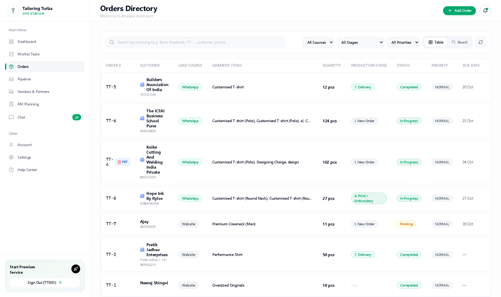
2. Factory Floor Kanban Board (`?view=kanban`)
Touch-friendly column layout built for factory wall monitors and iPads mounted on production tables.
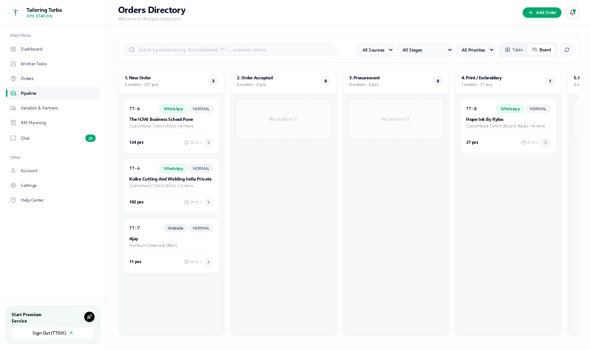
Single Source of Truth Order Detail Page (`/ops/orders/[id]`)
The master manufacturing sheet containing client details, visual mockups, exact size counts, internal notes, and stage progress.
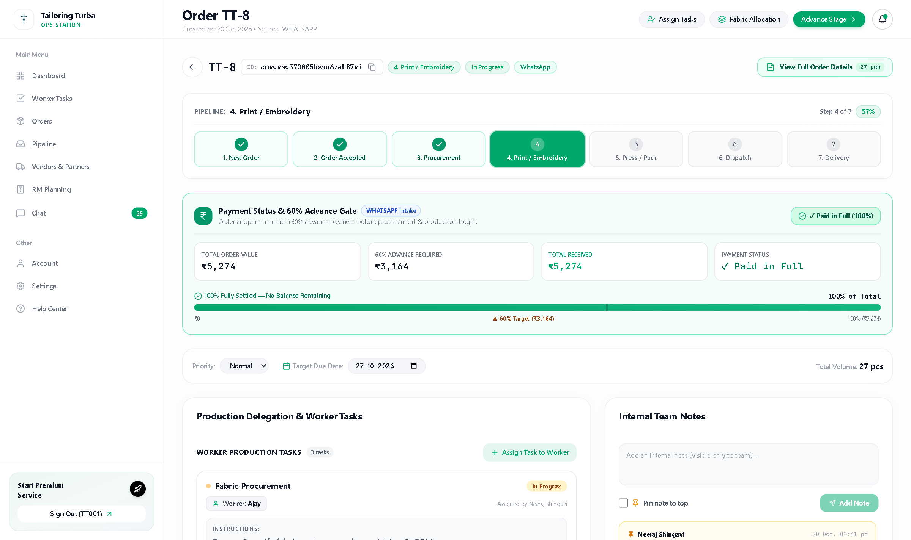
Interactive Stage Progress Stepper
Visual 11-step breadcrumb showing completed steps (solid green with checkmark), current active stage (emerald glow with pulse indicator), and future steps (gray).
4-Angle Visual Customizer Mockups
High-resolution renders of the garment: Front, Back, Left Sleeve, and Right Sleeve with accurate print and embroidery placements.
Size Breakdown Matrix
Displays the exact quantity breakdown across standard sizes (S, M, L, XL, XXL, 3XL). Master cutters cut strictly to this table.
Internal Team Notes & Pinning
Staff can leave timestamped notes (e.g. "Customer requested 2 extra inches on sleeves") and pin critical instructions to the top.
Activity Timeline & Audit Trail
Every action (stage advancement, fabric note, rework flag) is logged permanently with the operator's name and exact time.
Logistics & Bigship Integration
Direct generation of courier AWB labels, shipping manifests, package dimensions, and real-time transit tracking.
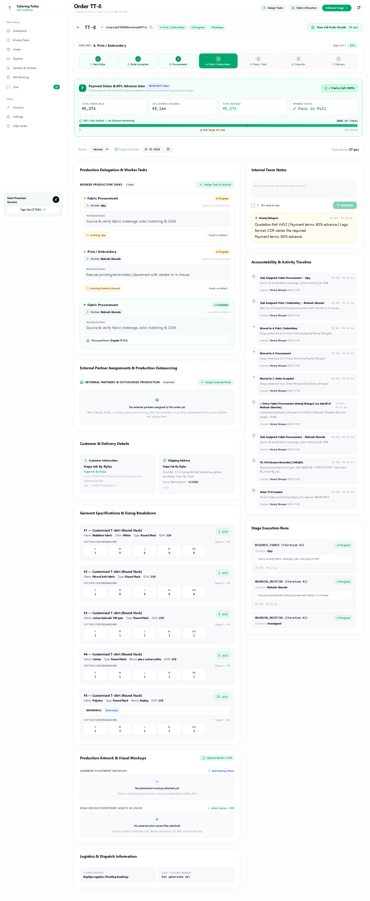
The Standard 11-Stage Production Workflow Engine
The backbone of factory operations. Every garment order advances through this strict sequence.
| Step # | Stage Identifier | Display Name | Station Owner | Standard Operations Performed |
|---|---|---|---|---|
| 01 | NEW_ORDER |
New Order Intake | Neeraj / Pratik | Order received from website customizer or manual entry. Verify customer specs and 50% split advance payment. |
| 02 | ORDER_CONFIRMED |
Order Confirmed | Neeraj / Sanjay | Sizing confirmed, delivery deadline locked, print files verified for minimum 300 DPI resolution. |
| 03 | RESOURCE_FABRIC |
Resource & Fabric | Sanjay (Master Cutter) | Allocate fabric roll (Cotton, Matty, Poly, French Terry), match GSM, check color lot consistency. |
| 04 | CUTTING |
Pattern Cutting | Sanjay & Cutting Team | Fabric layered, master patterns laid out according to size matrix (S, M, L, XL), precision fabric cutting. |
| 05 | STITCHING |
Garment Stitching | Stitching Floor / Tailors | Assembly of panels, neck rib attachment, shoulder tape, overlocking, and bottom hemming. |
| 06 | BRANDING_PRINTING |
Branding & Printing | Mahesh (Printing Lead) | DTF heat press, screen printing, or computerized embroidery applied at chest, back, or sleeve coordinates. |
| 07 | QUALITY_CHECK |
Quality Inspection | Ajay (QC Specialist) | 100% inspection against measurement chart, seam strength test, print scratch test, defect evaluation. |
| 08 | PACKING |
Ironing & Packaging | Ajay & Floor Staff | Steam ironing, brand tags, fold into individual branded polybags, bulk box packaging. |
| 09 | READY_FOR_DISPATCH |
Ready for Dispatch | Ajay / Neeraj | Box weighed, dimensions entered into Bigship API, shipping label printed and pasted on package. |
| 10 | DISPATCHED |
Handed to Courier | Ajay | Courier rider signs manifest, AWB tracking active, automated WhatsApp/SMS dispatch alert to customer. |
| 11 | CLOSED |
Delivered & Closed | System / Neeraj | Delivery confirmed by courier API, remaining balance collected, customer review logged. |
Advancing An Order To The Next Stage
When your station finishes its work, click the green Advance Stage button. The modal below will open:
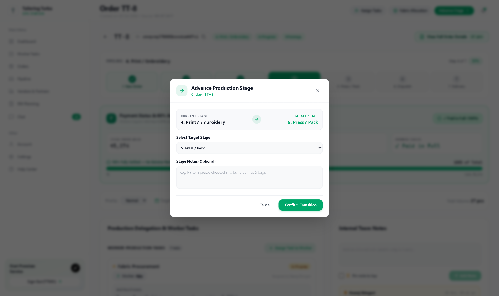
Quality Control & Controlled Rework Loop
Our zero-compromise defect containment loop: returning defective garments directly to the responsible station.
When an order reaches Quality Check (Step 07), the QC inspector (Ajay) examines every garment. If any defect is found (such as misaligned DTF print, crooked stitching, wrong size measurements, or fabric stain), the order is NOT cancelled. Instead, the Controlled Rework Loop is initiated.
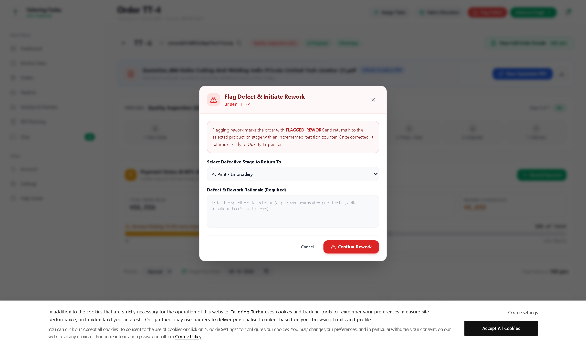
- BRANDING_PRINTING: Misaligned logo, peeled transfer, incorrect ink color.
- STITCHING: Broken seam, puckering, loose thread, wrong collar attachment.
- CUTTING: Dimension out of tolerance by more than 0.5 inches.
- RESOURCE_FABRIC: Fabric discoloration, oil stain, GSM thinness defect.
Raw Material & Fabric Roll Planning (`/ops/planning`)
Automatic fabric consumption estimates based on size matrix, GSM, and roll allocations.
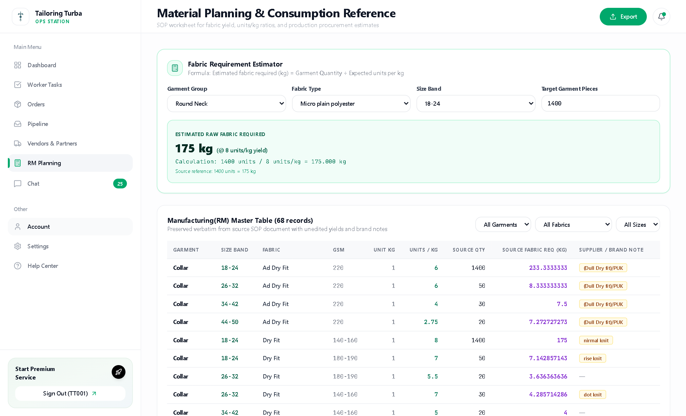
/ops/planning, selects the target production order, and verifies fabric roll barcodes, GSM rating (180/220/320), and dye lot consistency before unrolling.| Garment Silhouette | Fabric Type & GSM | Avg Meter / Piece | Trim Requirements | Target Marker Eff. |
|---|---|---|---|---|
| Round Neck T-Shirt | 180 GSM Single Jersey Combed Cotton | 0.45m (S–L) / 0.52m (XL–3XL) | 1x1 Cotton Spandex Neck Rib (35g) | 86% - 88% |
| Polo Collar T-Shirt | 220 GSM Honeycomb Matty Cotton/Poly | 0.60m per piece | 1 Jacquard Collar + 2 Sleeve Cuffs | 84% - 87% |
| Pullover Hoodie | 320 GSM 3-Thread Cotton Fleece | 1.10m body + 0.35m hood | 2x2 Heavy Rib Hem + Drawcord | 85% - 89% |
| Oversized Drop-Tee | 240 GSM Heavy French Terry | 0.65m per piece | Thick Rib Collar (1.25 inch) | 87% - 90% |
External Vendor & Jobwork Management (`/ops/vendors`)
Manage external tailoring units, computerized embroidery facilities, and screen printing jobwork.
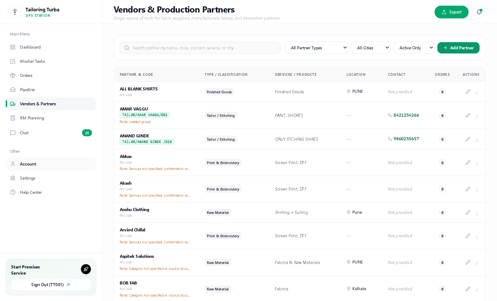
/ops/vendors and filter partners by capability tag (e.g. Screen Print, DTF, Tailor/Stitching).| Partner Capability | Key Production Services | Standard Turnaround | Acceptable Loss Tolerance |
|---|---|---|---|
| Tailor / Stitching Units | Cut-to-Pack garment assembly, overlocking, flatlock hems | 3 – 5 Days | ≤ 0.5% (Max 1 pc) |
| Print & Embroidery Units | Multi-color DTF heat transfers, plastisol screen print, embroidery | 24 – 48 Hours | ≤ 1.0% |
| Raw Material Mills | Knitted combed single jersey, fleece rolls, Matty collar sets | 2 – 3 Days | Zero Tolerance (Roll Return) |
Daily Floor Tasks & Worker Assignments (`/ops/tasks`)
Personalized touch interface for floor workers to view their assigned jobs and track shift completion.
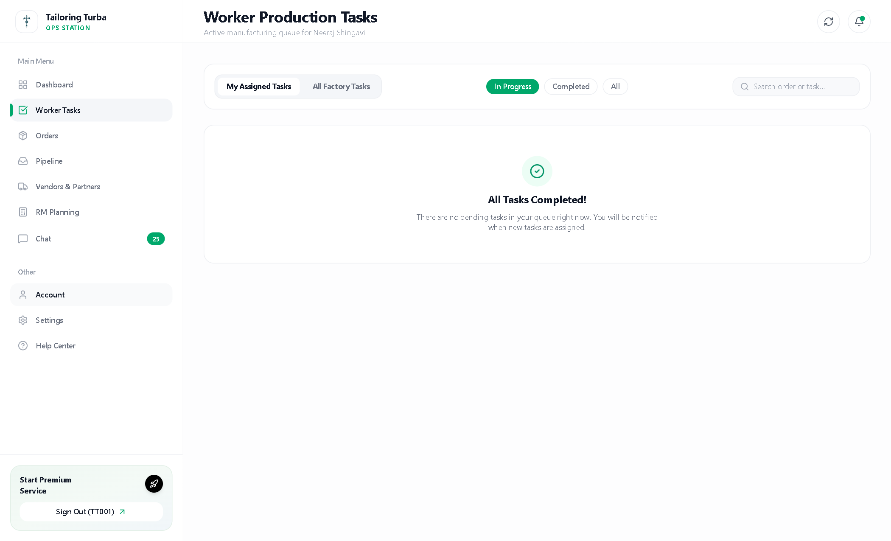
Factory Team Chat & Broadcast Communication (`/ops/chat`)
Internal communication hub eliminating misplaced paper slips and WhatsApp fragmentation.
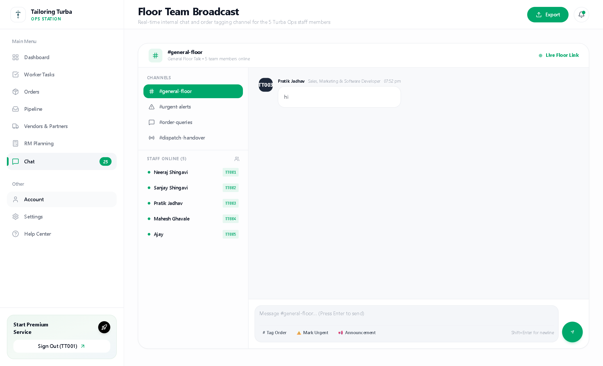
#ORD-2026-001) automatically generates an interactive card showing current stage, quantity, and design previews.Employee Account Profile & Station Settings (`/ops/account`, `/ops/settings`)
Personal statistics, performance metrics, and station display preferences.
1. Employee Profile & Operations Metrics (`/ops/account`)
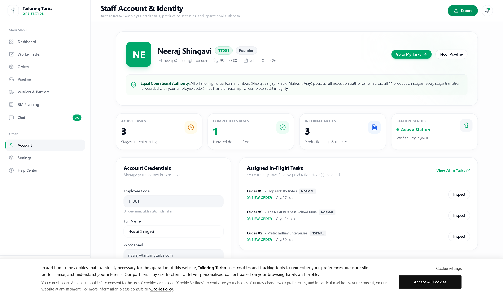
2. Station Preferences & Display Settings (`/ops/settings`)
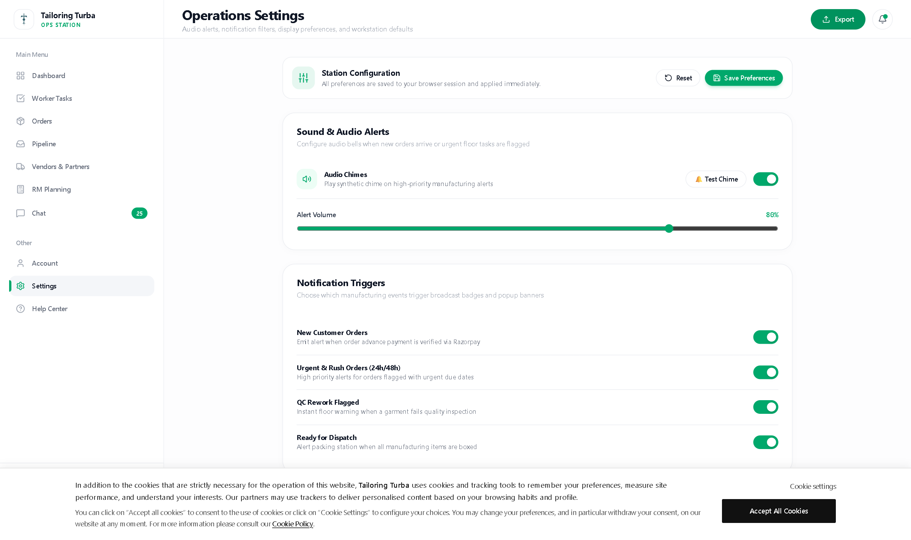
Role-By-Role Operational Cheatsheets
Quick daily checklist tailored for each specific team member.
👑 Neeraj (Founder / Ops Lead)
- Review the Ops Dashboard at 9:00 AM every morning.
- Check the Urgent Alerts banner for any delivery deadlines within 48h.
- Verify customer balance payments before approving final courier dispatch.
- Inspect rework trends to address repeated stitching or print flaws.
✂️ Sanjay (Master Cutter & Fabric)
- Open /ops/planning and review pending fabric roll allocations.
- Double-check GSM and fabric color lot before laying patterns.
- Cut strictly to the Size Breakdown Matrix on the master order sheet.
- Click Advance Stage to move orders to
STITCHINGonce cut.
🧵 Pratik (Sales, Tech & Stitching)
- Ensure website customizer mockups render cleanly in all 4 views.
- Assign bundles to internal tailors or external jobwork vendors.
- Monitor thread color matching and collar rib attachments.
- Move orders to
BRANDING_PRINTINGwhen stitching completes.
🎨 Mahesh (Branding & Printing Lead)
- Open the master order sheet and download high-res vector/PNG files.
- Verify print placements against the 4-angle customizer preview.
- Set heat press temperature to 160°C for 15s with 5s post-press cure.
- Perform scratch and wash rub tests before passing to
QUALITY_CHECK.
🔍 Ajay (Quality Check & Dispatch)
- Perform 100% garment inspection (measurements, seams, branding alignment).
- If defective: click Flag Defect and return to responsible stage.
- If passed: advance to
PACKING, steam iron, and fold into polybags. - Print Bigship AWB shipping label, weigh package, and hand to courier.